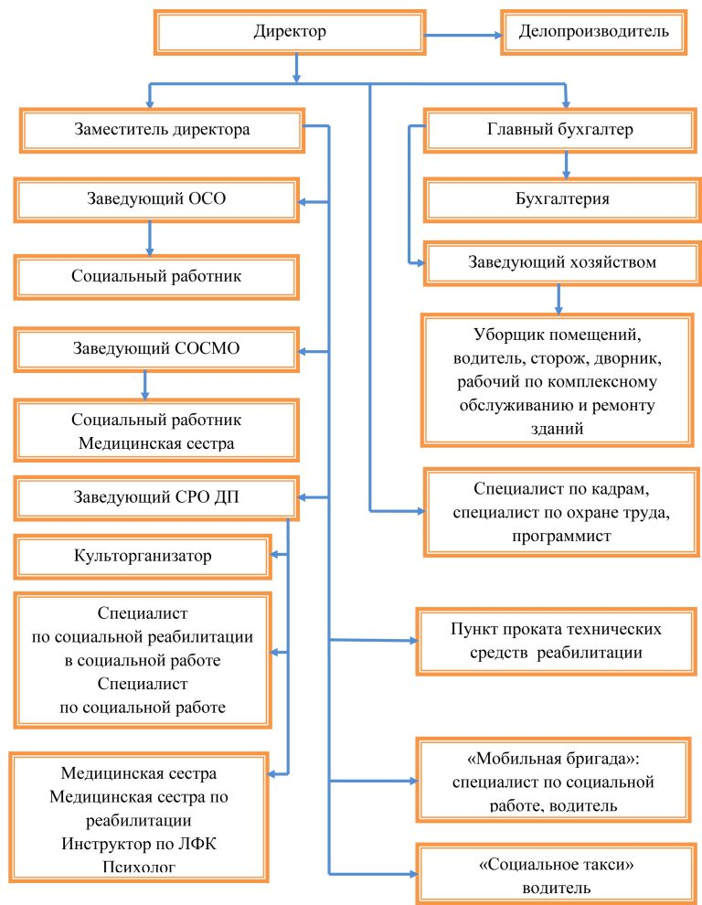

Структура учреждения
МБУ «Центр социального обслуживания граждан пожилого возраста и инвалидов №1» г. Шахты имеет четкую организационную структуру, обеспечивающую эффективное оказание социальных услуг населению.
Организационная структура ЦСО №1
Центр социального обслуживания имеет следующую структуру, утвержденную Департаментом труда и социального развития Администрации города Шахты:
-
Административно-управленческий аппарат
Осуществляет общее руководство центром, координирует работу всех отделений, обеспечивает взаимодействие с органами власти и другими организациями.
Людмила Михайловна БрюховецкаяДиректор -
Отделения социального обслуживания на дому
Предоставляют социальные услуги гражданам пожилого возраста и инвалидам, нуждающимся в постоянной или временной посторонней помощи в связи с частичной утратой возможности самостоятельно удовлетворять свои основные жизненные потребности.
В центре функционирует 8 отделений социального обслуживания на дому.
-
Отделение дневного пребывания
Предоставляет социальные услуги гражданам пожилого возраста и инвалидам, сохранившим способность к самообслуживанию и активному передвижению, в целях поддержания их социально-психологического статуса.
-
Отделение срочного социального обслуживания
Оказывает неотложную помощь разового характера гражданам, попавшим в трудную жизненную ситуацию и остро нуждающимся в социальной поддержке.
-
Социально-реабилитационное отделение
Проводит оздоровительные и реабилитационные мероприятия для граждан пожилого возраста и инвалидов, направленные на сохранение здоровья и активного долголетия.
-
Организационно-методическое отделение
Отвечает за информационно-аналитическую работу, методическое обеспечение деятельности структурных подразделений, повышение квалификации сотрудников.
Взаимодействие и подчиненность
Центр подчиняется Департаменту труда и социального развития Администрации города Шахты и тесно взаимодействует с Министерством труда и социального развития Ростовской области.
Все отделения центра работают в тесной взаимосвязи для обеспечения комплексного подхода к решению проблем граждан пожилого возраста и инвалидов.